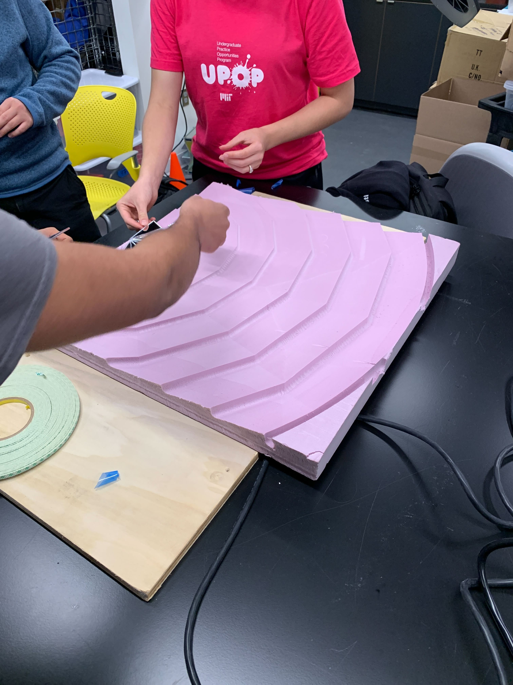
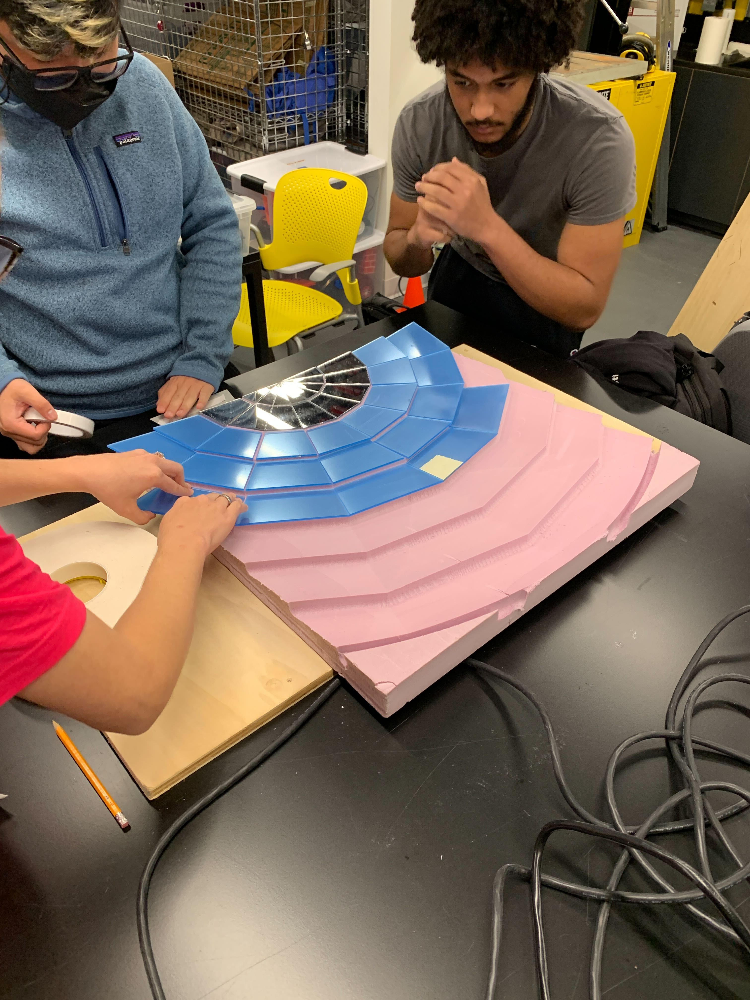
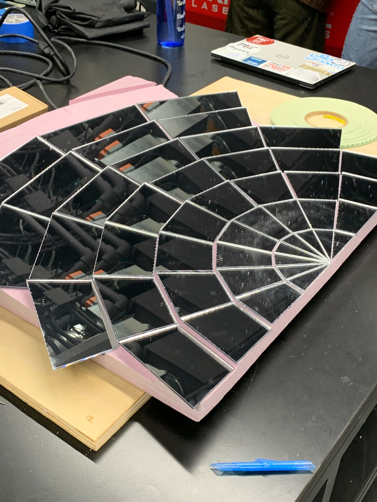
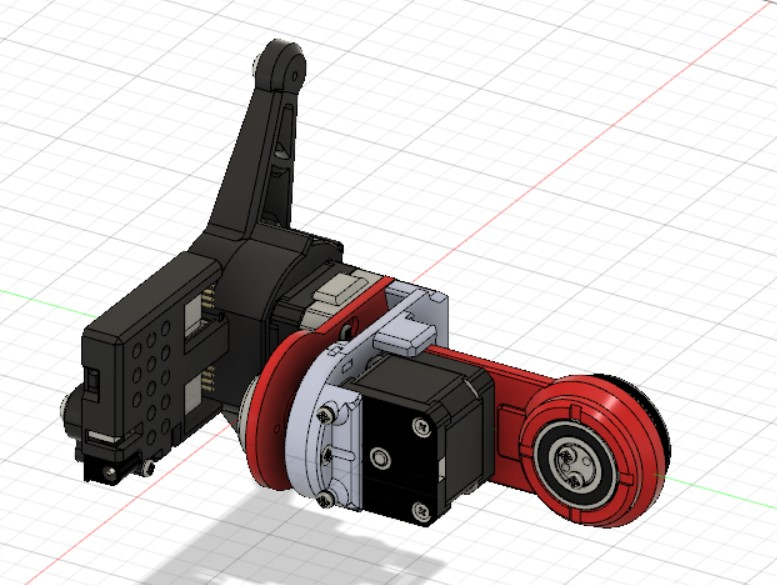
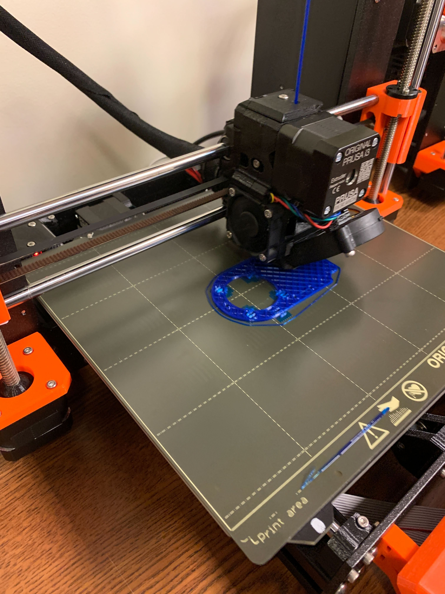
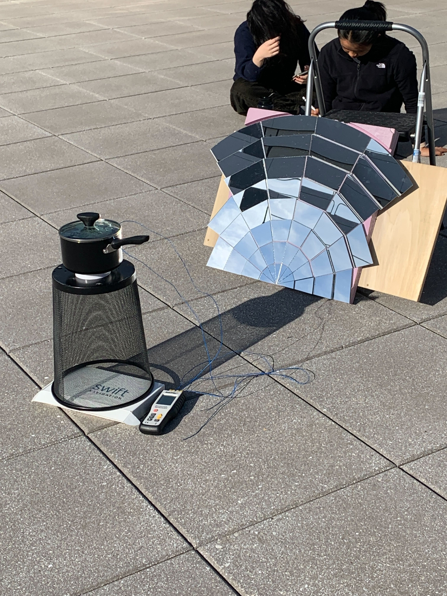
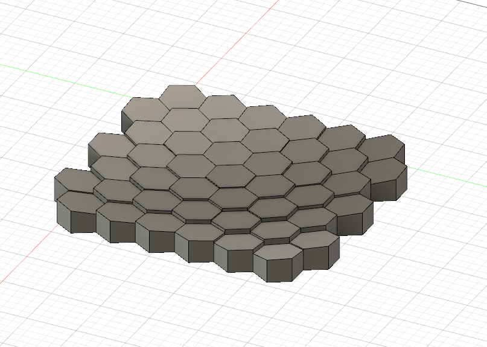

### Weeks 6-7: Assembling Reflector and 3D Print Intro
Week 6 began with our team finishing up the assembly of the section of the reflector array we were machining last week. This is what the base of the reflector array looked like after machining concluded.

Our next step was to laser cut and attatch the refelctive material to the array. Our reflective material of choice was an acrylic mirror. Here is a video of the alser cutting process.
<video controls>
<source src="./lasercutting.mp4" type="video/mp4">
</video>
After each of the pieces was lasercut, we needed to actually attatch them to the base. This was done using double-sided tape. Note that some of the mirror pieces are covered in a thin blue material, which is used to protect the mirror surface from scratches/fingerprints/etc.

Finally, we were left with a finished reflector section.

We then shined a spotlight at the reflector section, to get an idea of where the light was reflecting. As expected, the light did not all shine to a very focused point in space, but rather was an area about as wide as one of the individual mirror-sections on our array.
<video controls>
<source src="./quicktest.mp4" type="video/mp4">
</video>
Our next step that week was to begin the construction of a device that would allows us to test the solar tracking mechanism. To do this, we found the CAD online of a device that would rotate in two directions using stepper motors, and made several adjustments to the CAD in order to fit our components. These adjustments included changing he diameters of a few holes in order to fit our motors properly.

Next, we started to print out the many different components of this device. We used Prussia printers in order to do this, which were relatively simple to learn how to use. Setting up the print files and printers took mere minutes, and the rest of the time was spent printing, and fit checking already printed materials.

<video controls>
<source src="./printing3d.mp4" type="video/mp4">
</video>
Week 7 was a short week, and was spent mostly on performing a more analytical tests on the reflector section we assembled the week prior. The reflector seemed to be working fairly well, and was able to heat up a pot to a maximum temperature of about 60 degrees Celsius, although measuring this was a bit troublesome as the experiment wass done towards the end of the sunny day as sunlight was decreasing. However, this was still promising, as our array was about 1/6 of the size of the larger commercial cooker we tested, and still heated up the pot very well.

We decided that it could be beneficial to create a different reflector array where each panel is roughly the same size, to allow for the light to be more focused and allow our system to be more sufficient, as less sunlight would be missing the desired target. So, I set to work on creating the CAD for a reflector array with hexagonal panels, each of almost identical sizes depending on the angle they are at.

There were a few problems that came up during the creation of this, including some panels inverting and flipping if the desired location of the focus point was shifted. These problems would be debugged the following week.
And here is a [link to the home page](../index.html).